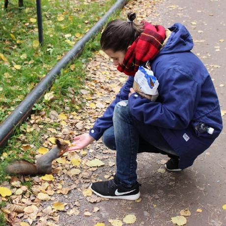

Iratxe Lizame
App / Web Developer

Summary
Hi there! I'm Iratxe and I was a nurse before switching paths and becoming a Web Developer!
I'm currently building my first projects and learning a lot and consider myself very proactive,
professional, I'm able to easily adapt to changes and can totally multitask.
Education
- Cross-platform Development Course. iFP Online (2021-2023)
- Java as main programming language (Eclipse and Android Studio)
- Basic Game Design in Unity with C++
- Relational databases (MySQL, SQLite)
- MSc Analysis and Management of Emergencies and Catastrophes. University of Oviedo (2018)
- Bachelor of Science, Nursing. University of Oviedo
Work Experience
References can be provided upon request.
Certifications
- Crash Course on Phyton - Coursera, october 2022
- Basics of UX Design - Coursera, november 2022
- Basics of Data Analysis - Coursera, september 2022
Skills and Languages
- Languages
- Spanish - native
- English and Norwegian - professional proficiency
- Italian and Japanese - basic knowledge
- Soft Skills
- Initiative
- Flexible
- Great time management
- I can make a delicious tiramisú
Get to know me